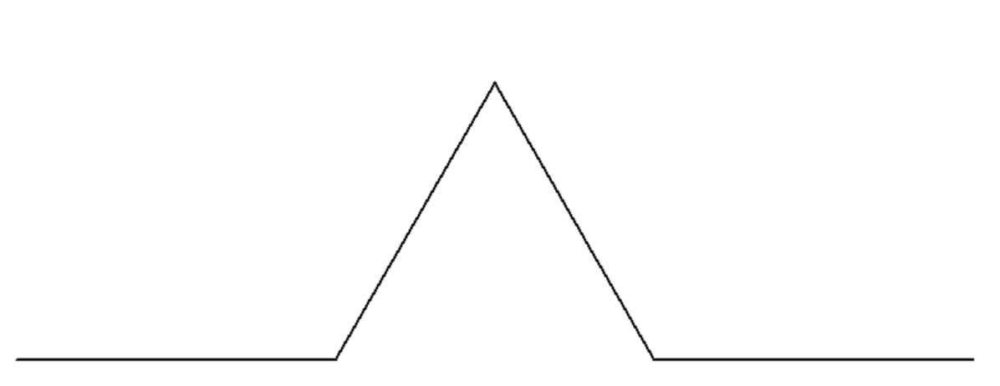
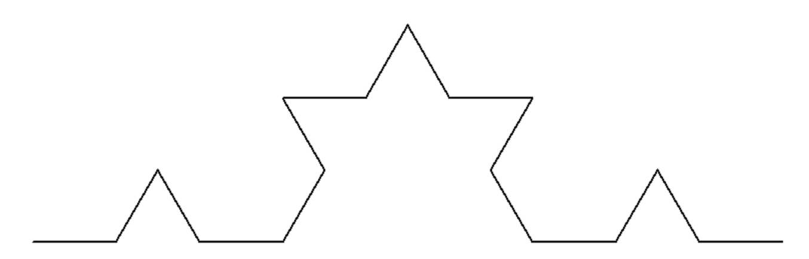
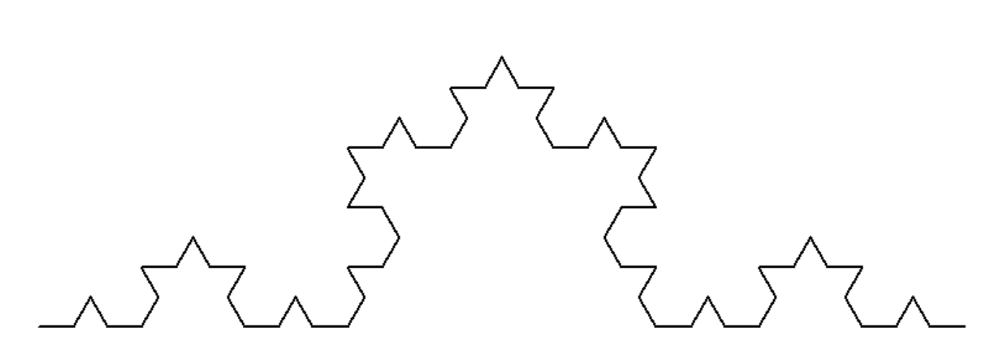

Functions and Recursion in Scratch and Python
Fractals are shapes with some special characteristics:
To make a fractal, start with a basic shape or line

You then repeat the same line in each of the parts of the original

As you continue to repeat, or recurse downward, the shape becomes more intricate

In order to draw fractals with computers we use two things:
To draw a fractal in Scratch, we can use the following:
import turtle # imports the turtle module
t = turtle.Turtle() # creates a turtle
t.forward(100) # draws 100 pixels forward
t.left(60) # turns left 60°
t.forward(100) # draws 100 pixels forward
t.right(120) # turns right 120°
t.forward(100) # draws 100 pixels forward
t.left(60) # turns left 60°
t.forward(100) # draws 100 pixels forward
turtle.done() # keeps the window open